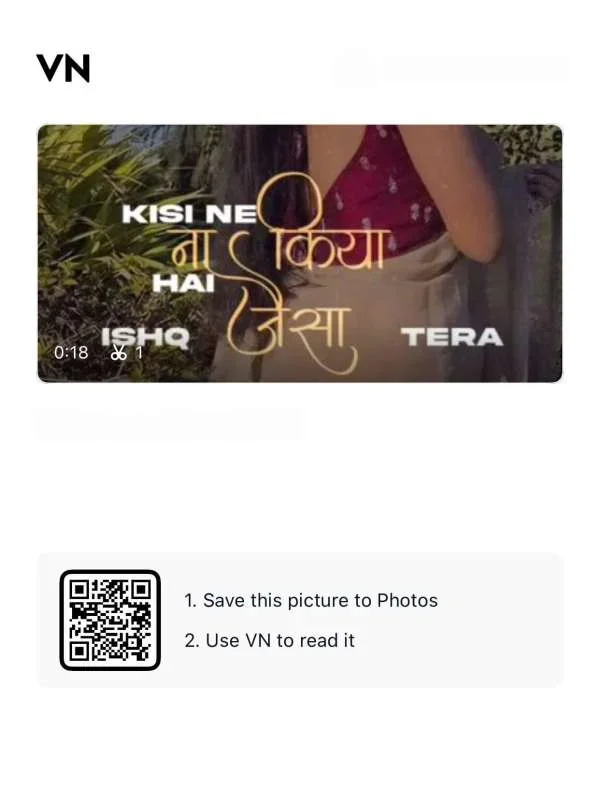

If you have seen a love reel on Instagram with cinematic zooms, soft glow effects, and perfectly timed cuts set to the song “Kisi Ne Na Kiya Hai Jaisa Ishq Tera Mera“, there is a good chance it was made using a VN template code.
This template is trending right now, especially for couple reels, engagement videos, and emotional love story edits. In this article, I will show you how to use this template and how to get the best result from it.
Why This VN Template Is Getting So Popular
The song itself already carries a deep romantic and emotional feel, and editors have designed the transitions and effects to match that mood. Slow zooms, soft color tones, and smooth cuts line up perfectly with the beats of the song.
Because of this, when people add their own photos or clips into the template, the reel automatically feels like a professional love story video, without needing any editing skill.
How to Use This VN Template Code

Step 1: Open the VN Video Editor app on your phone. If you do not have it yet, download it first.
Step 2: Save the template code, which is usually shared as a QR code image.
Step 3: Open the VN app and tap the scan option on the home screen.
Step 4: Either scan the code directly with your camera, or select the saved QR code image from your gallery.
Step 5: Once the project opens, replace the sample clips with your own photos or videos.
Step 6: Preview your reel, make any small changes if needed, and export it in high quality.
That is really all it takes. The transitions, timing, and effects are already set up for you, so you just need to add your own content.
Tips for the Best Result
Use clear photos or videos with good lighting, since dark or blurry clips do not blend well with a cinematic look.
Try to match the number of clips to what the original template used, so the reel does not feel rushed or empty.
This template works best for couples, engagements, or emotional moments, so pick content that matches that mood.
Always export in the highest quality setting, so Instagram does not compress your video and reduce its quality.
Why This Trend Is Doing So Well on Instagram
Instagram pushes content that keeps viewers watching until the end. Since this template has smooth transitions and pacing that matches the emotional beat of the song, viewers naturally stay till the end of the reel.
This is also why new romantic templates like this one keep trending every week, as creators keep making fresh versions with trending songs.
Final Thoughts
The “Kisi Ne Na Kiya Hai Jaisa Ishq Tera Mera” VN template is perfect for anyone who wants to create an emotional, cinematic love reel without learning editing from scratch. All you need is the right photos, this template code, and a couple of minutes.
If you want your reels to always feel fresh and trending, keep checking for new VN templates regularly.
FAQ
Is this VN template free to use? Yes, scanning and using the template code inside the VN app is completely free.
Do I need editing skills to use this template? No. You only need to replace the sample clips with your own photos or videos, since the editing is already done for you.
What type of content works best with this template? It works best for love stories, couple reels, engagements, and other romantic moments.
Will my reel look exactly like the original template? The transitions and timing will stay the same, but the final look also depends on the quality and lighting of your own photos or videos.
Where can I find new VN template codes? Creators share new codes regularly on Instagram, and TempSeen also updates trending codes often.